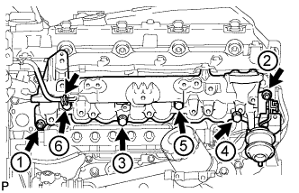
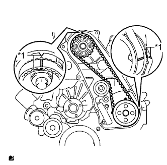
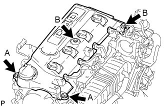
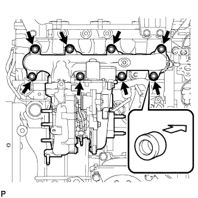
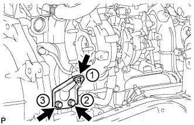
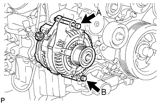

БЛОК ДВИГАТЕЛЯ (для моделей без DPF) > УСТАНОВКА |
| 1. УСТАНОВИТЕ ПРАВЫЙ КРОНШТЕЙН ПЕРЕДНЕЙ ОПОРЫ ДВИГАТЕЛЯ № 1 |
Закрепите 2 кронштейна опоры двигателя 8 болтами.
| 2. УСТАНОВИТЕ ИЗОЛЯТОР БЛОКА ЦИЛИНДРОВ № 2 |
Установите изолятор блока цилиндров № 2.
| 3. УСТАНОВИТЕ ВАКУУМНУЮ ТРУБКУ № 1 |
Закрепите вакуумную трубку № 1 болтом.
| 4. УСТАНОВИТЕ КРЫШКУ МАСЛЯНОГО ПОДДОНА № 1 В СБОРЕ |
Закрепите крышку масляного поддона № 1 4 болтами.
| 5. УСТАНОВИТЕ ВАКУУМНУЮ ТРУБКУ № 1 В СБОРЕ |
Закрепите вакуумную трубку № 1 болтом и гайкой.
| 6. УСТАНОВИТЕ КРЫШКУ МАСЛЯНОГО РАДИАТОРА В СБОРЕ |
Закрепите крышку масляного радиатора 13 болтами.
| 7. УСТАНОВИТЕ ВАКУУМНУЮ ТРУБКУ № 2 В СБОРЕ |
Закрепите вакуумную трубку № 2 2 гайками.
Подсоедините вакуумный шланг.
| 8. УСТАНОВИТЕ ВАКУУМНУЮ ТРУБКУ № 3 В СБОРЕ |
Закрепите вакуумную трубку № 3 с помощью болта.
Подсоедините вакуумный шланг.
| 9. УСТАНОВИТЕ МАСЛЯНЫЙ ФИЛЬТР В СБОРЕ |
Проверьте и очистите установочную поверхность масляного фильтра.
Нанесите чистое моторное масло на прокладку нового масляного фильтра.
Навинтите маслянный фильтр на место вручную. Затяните его так,чтобы уплотнение прилегало к посадочной поверхности.
 |
Затяните масляный фильтр с помощью SST. В зависимости от места проведения работ выберите следующее.
Если есть достаточно места, затяните масляный фильтр с помощью динамометрического ключа.
Если для использования динамометрического ключа недостаточно места, затяните масляный фильтр на 3/4 оборота вручную или обычным ключом.
| 10. УСТАНОВИТЕ ЭЛЕМЕНТ ЗАЩИТЫ ТОПЛИВНОГО НАСОСА ВЫСОКОГО ДАВЛЕНИЯ № 1 |
Установите элемент защиты № 1 топливного насоса высокого давления и закрепите его 2 болтами.
| 11. УСТАНОВИТЕ НАГНЕТАЮЩИЙ НАСОС В СБОРЕ |
 |
Убедитесь, что шестерня насоса высокого давления в картере газораспределительного механизма плавно перемещается назад и вперед.
Закрепите шкив приводного вала насоса и фланец зубчатого колеса распредвала № 2 4 болтами.
 |
Переместите шкив приводного вала насоса назад и вперед, чтобы проверить осевой зазор приводного вала насоса высокого давления.
| 12. УСТАНОВИТЕ ТОПЛИВНУЮ СИСТЕМУ COMMON RAIL В СБОРЕ |
Закрепите топливную систему Common Rail 2 болтами.
| 13. УСТАНОВИТЕ ТРУБКУ ПОДВОДА ТОПЛИВА |
Установите трубку подвода топлива и временно закрепите ее гайками штуцеров.
 |
С помощью разрезной головки на 17 мм затяните гайку штуцера трубки подвода топлива со стороны топливной системы Common Rail.
| *a | Со стороны топливной системы Common Rail |
| *b | Со стороны нагнетающего топливного насоса |
С помощью разрезной головки на 17 мм затяните гайку штуцера трубки подвода топлива со стороны нагнетающего топливного насоса.
| 14. УСТАНОВИТЕ ИЗОЛЯТОР ВПУСКНОГО КОЛЛЕКТОРА № 2 |
Установите изолятор впускного коллектора № 2
| 15. УСТАНОВИТЕ ВПУСКНОЙ КОЛЛЕКТОР |
|  |
Временно закрепите новую прокладку и впускной коллектор 2 гайками и 4 болтами.
Затяните 2 гайки и 4 болта в порядке, показанном на рисунке.
| *1 | Изолятор впускного коллектора № 1 |
Подсоедините вакуумный шланг к впускному коллектору.
Присоедините зажим разъема жгута проводов датчика к впускному коллектору.
| 16. УСТАНОВИТЕ ТЕПЛОЗАЩИТНЫЙ ЭКРАН ВПУСКНОГО КОЛЛЕКТОРА |
Закрепите изолятор впускного коллектора 2 болтами.
| *1 | Впускной коллектор |
| *2 | Изолятор впускного коллектора |
| *3 | Топливная система Common Rail |
| 17. УСТАНОВИТЕ ТРУБОПРОВОД ОБРАТНОГО СЛИВА ТОПЛИВА № 2 |
 |
Временно закрепите трубопровод обратного слива топлива № 2 4 болтами.
Временно установите новую прокладку и пустотелый соединительный болт-штуцер.
| *1 | Пустотелый соединительный болт-штуцер |
Затяните 4 болта и пустотелый соединительный болт-штуцер.
Подсоедините 3 топливных шланга.
| 18. УСТАНОВИТЕ ТОПЛИВНУЮ ТРУБКУ ВЫСОКОГО ДАВЛЕНИЯ № 4 |
 |
Временно закрепите топливную трубку высокого давления № 4 гайками штуцеров.
Заверните болт.
 |
С помощью разрезной головки на 17 мм затяните гайку штуцера топливной трубки высокого давления со стороны топливной системы Common Rail.
| *a | Со стороны топливной системы Common Rail |
| *b | Со стороны форсунки |
С помощью разрезной головки на 17 мм затяните гайки штуцеров топливной трубки высокого давления со стороны форсунки.
| 19. УСТАНОВИТЕ КОМПЛЕКТ ЭЛЕКТРОВАКУУМНОГО КЛАПАНА |
 |
Установите комплект электровакуумного клапана и закрепите его 2 болтами.
Подсоедините 3 вакуумных шланга и 2 разъема VSV.
| *1 | Метка, нанесенная краской (белая) |
| *2 | Метка, нанесенная краской (зеленая) |
| *3 | Привод клапана регулирования всасывания |
| 20. УСТАНОВИТЕ ОПОРУ ВПУСКНОГО ПАТРУБКА |
Закрепите опору впускного трубопровода болтом.
| 21. УСТАНОВИТЕ ОПОРУ КОЛЛЕКТОРА С ЭЛЕКТРОВАКУУМНЫМ КЛАПАНОМ |
Закрепите опору коллектора с электровакуумным клапаном 2 болтами и подсоедините вакуумные шланги № 3 и № 4 в сборе.
| *A | Для моделей без системы РОГ |
| *B | Для моделей с системой РОГ |
| *1 | Синяя метка |
| *2 | Метка, нанесенная белой краской |
Для моделей с охладителем РОГ:
Подсоедините вакуумный шланг № 3.
 |
Для моделей с системой РОГ:
Подсоедините вакуумные шланги № 2 и № 3 в сборе.
| *1 | Желтая метка |
| *2 | Розовая метка |
Подсоедините вакуумный шланг № 1.
| 22. УСТАНОВИТЕ СВЕЧУ НАКАЛИВАНИЯ В СБОРЕ |
Установите 4 свечи накаливания с помощью торцевого ключа на 12 мм.
| 23. УСТАНОВИТЕ ИЗОЛЯТОР ВПУСКНОГО КОЛЛЕКТОРА № 1 |
Установите изолятор впускного коллектора № 1
| 24. УСТАНОВИТЕ РАЗЪЕМ СВЕЧИ НАКАЛИВАНИЯ № 1 |
Подсоедините разъемы свечи накаливания и закрепите их 4 гайками. Равномерно затяните гайки.
Установите 4 уплотнительные шайбы винта.
| 25. УСТАНОВИТЕ ВЫПУСКНОЙ ПАТРУБОК ОХЛАЖДАЮЩЕЙ ЖИДКОСТИ |
Закрепите новую прокладку и выпускной патрубок охлаждающей жидкости 2 болтами.
| 26. УСТАНОВИТЕ ПЛОСКУЮ КРЫШКУ ОТВЕРСТИЯ РОГ № 2 (для моделей без системы РОГ) |
Закрепите новую прокладку и плоскую крышку отверстия РОГ № 2 2 гайками.
| 27. УСТАНОВИТЕ ПАТРУБОК ПОДАЧИ ВОЗДУХА № 2 (для моделей без системы РОГ) |
Закрепите патрубок подачи воздуха № 2, патрубок подачи воздуха № 1 и 2 новых прокладки 3 гайками, как показано на рисунке.
| *1 | Патрубок подачи воздуха № 2 |
| *2 | Патрубок подачи воздуха № 1 |
| *3 | Патрубок подачи воздуха |
| *4 | Прокладка |
| 28. УСТАНОВИТЕ ПАТРУБОК ПОДАЧИ ВОЗДУХА (для моделей без системы РОГ) |
Установите новую прокладку на впускной коллектор.
Закрепите патрубок подачи воздуха 3 болтами.
| 29. УСТАНОВИТЕ ОПОРУ ПАТРУБКА ПОДАЧИ ВОЗДУХА (для моделей без системы РОГ) |
Предварительно установите опору патрубка подачи воздуха, закрепив ее 3 болтами.
Затяните болт, обозначенный А.
Затяните 2 болта В.
| 30. УСТАНОВИТЕ ТОПЛИВНУЮ ТРУБКУ ВЫСОКОГО ДАВЛЕНИЯ (для моделей без системы РОГ) |
 |
Временно закрепите топливные трубки высокого давления № 1, № 2 и № 3 гайками штуцеров.
| *1 | Топливная трубка высокого давления № 2 |
Закрепите зажимы топливных трубок высокого давления № 2 и № 3 2 болтами и 2 гайками, как показано на рисунке.
 |
С помощью разрезной головки на 17 мм затяните гайки штуцеров топливной трубки высокого давления со стороны топливной системы Common Rail.
| *a | Со стороны топливной системы Common Rail |
| *b | Со стороны форсунки |
С помощью разрезной головки на 17 мм затяните гайки штуцеров топливной трубки высокого давления со стороны форсунки.
| 31. УСТАНОВИТЕ КРОНШТЕЙН КОРПУСА ДРОССЕЛЬНОЙ ЗАСЛОНКИ (для моделей без системы РОГ) |
Установите корпус дроссельной заслонки и закрепите его 2 болтами.
Установите газовый фильтр с кронштейном газового фильтра и закрепите болтом.
Подсоедините вакуумный шланг.
| 32. УСТАНОВИТЕ КЛАПАН РОГ № 2 В СБОРЕ (для моделей с охладителем РОГ) |
С помощью шестигранного ключа на 6 мм закрепите переходник клапана РОГ, клапан РОГ № 2, охладитель РОГ, 2 новых прокладки и 3 плоских шайбы 3 болтами с шестигранной головкой.
С помощью шестигранного ключа на 5 мм вверните болт A.

| *1 | Охладитель РОГ с трубой | *2 | Новая прокладка |
| *3 | Клапан РОГ № 2 | *4 | Переходник клапана РОГ |
| 33. УСТАНОВИТЕ ОХЛАДИТЕЛЬ РОГ С ТРУБОЙ (для моделей с системой РОГ с охладителем РОГ) |
Установите новую прокладку и охладитель РОГ с трубой на электрический клапан управления РОГ и клапан РОГ № 2 и закрепите их 2 болтами.

| *1 | Охладитель РОГ с трубой и клапан РОГ № 2 | *2 | Новая прокладка |
| *3 | Электрический клапан управления РОГ | - | - |
| 34. ВРЕМЕННО УСТАНОВИТЕ ЭЛЕКТРИЧЕСКИЙ КЛАПАН УПРАВЛЕНИЯ РОГ В СБОРЕ (для моделей с системой РОГ с охладителем РОГ) |
Поместите новую прокладку, электрический клапан управления РОГ, еще одну новую прокладку и патрубок подачи воздуха на шпильки патрубка подачи воздуха № 2 и временно заверните 3 гайки.
| *1 | Патрубок подачи воздуха № 2 | *2 | Электрический клапан управления РОГ |
| *3 | Патрубок подачи воздуха | *4 | Новая прокладка |
| *a | 0-2 витка | - | - |
Установите новую прокладку на впускной коллектор.
Временно закрепите патрубок подачи воздуха на впускном коллекторе 3 болтами, как показано на рисунке.
Временно закрепите охладитель РОГ с трубой и новую прокладку на головке блока цилиндров с помощью болта и 2 гаек.

| *1 | Электрический клапан управления РОГ | *2 | Новая прокладка |
Подсоедините вакуумный шланг № 2 к клапану РОГ № 2.
| 35. ЗАКРЕПИТЕ ЭЛЕКТРИЧЕСКИЙ КЛАПАН УПРАВЛЕНИЯ РОГ В СБОРЕ (для моделей с системой РОГ с охладителем РОГ) |
Затяните 3 гайки, обозначенные А, как показано на рисунке.
Затяните 3 болта, обозначенные B, как показано на рисунке.
Затяните болт, обозначенный C, как показано на рисунке.
Затяните 2 гайки, обозначенные D, как показано на рисунке.

| *a | Передняя сторона | - | - |
| 36. УСТАНОВИТЕ ТРУБУ РОГ № 1 В СБОРЕ (для моделей с системой РОГ без охладителя РОГ) |
Закрепите новую прокладку и трубу РОГ № 1 на электрическом клапане управления РОГ 2 болтами.

| *1 | Электрический клапан управления РОГ | *2 | Новая прокладка |
| *3 | Труба РОГ № 1 | - | - |
| 37. ВРЕМЕННО УСТАНОВИТЕ ЭЛЕКТРИЧЕСКИЙ КЛАПАН УПРАВЛЕНИЯ РОГ В СБОРЕ (для моделей с системой РОГ без охладителя РОГ) |
Поместите новую прокладку, электрический клапан управления РОГ, еще одну новую прокладку и патрубок подачи воздуха на шпильки патрубка подачи воздуха № 2 и временно заверните 3 гайки.
| *1 | Патрубок подачи воздуха № 2 | *2 | Электрический клапан управления РОГ |
| *3 | Патрубок подачи воздуха | *4 | Новая прокладка |
| *a | 0-2 витка | - | - |
Установите новую прокладку на впускной коллектор.
Временно закрепите патрубок подачи воздуха на впускном коллекторе 3 болтами.
Временно закрепите трубу РОГ № 1 и новую прокладку на головке блока цилиндров с помощью 2 гаек.

| *1 | Электрический клапан управления РОГ | *2 | Новая прокладка |
| 38. ЗАКРЕПИТЕ ЭЛЕКТРИЧЕСКИЙ КЛАПАН УПРАВЛЕНИЯ РОГ В СБОРЕ (для моделей с системой РОГ без охладителя РОГ) |
Затяните 3 гайки, обозначенные А, как показано на рисунке.
Затяните 3 болта, обозначенные B, как показано на рисунке.
Затяните 2 гайки, обозначенные C, как показано на рисунке.
| *a | Передняя сторона | - | - |
| 39. УСТАНОВИТЕ ОПОРУ ПАТРУБКА ПОДАЧИ ВОЗДУХА (для моделей с системой РОГ) |
 |
Предварительно установите опору патрубка подачи воздуха, закрепив ее 3 болтами.
Затяните болт, обозначенный А.
Затяните 2 болта В.
| 40. УСТАНОВИТЕ ЭЛЕКТРОННЫЙ КЛАПАН УПРАВЛЕНИЯ РАЗРЕЖЕНИЕМ В СБОРЕ (для моделей с системой РОГ) |
Закрепите кронштейн E-VRV 2 болтами.
Закрепите газовый фильтр и кронштейн газового фильтра болтом.
 |
Подсоедините 5 вакуумных шлангов.
| *1 | Желтая метка |
| *2 | Розовая метка |
Подсоедините 2 разъема к электрическому клапану управления РОГ и E-VRV.
Закрепите зажим жгута проводов.
| 41. УСТАНОВИТЕ КРОНШТЕЙН КЛАПАНА РОГ (для моделей с системой РОГ) |
Установите кронштейн клапана РОГ, закрепив его 2 гайками.
| 42. УСТАНОВИТЕ ТОПЛИВНУЮ ТРУБКУ ВЫСОКОГО ДАВЛЕНИЯ (для моделей с системой РОГ) |
|
Временно закрепите топливные трубки высокого давления № 1, № 2 и № 3 гайками штуцеров.
| *1 | Топливная трубка высокого давления № 2 |
Закрепите зажимы топливных трубок высокого давления № 2 и № 3 2 болтами и 2 гайками, как показано на рисунке.
|
С помощью разрезной головки на 17 мм затяните гайки штуцеров топливной трубки высокого давления со стороны топливной системы Common Rail.
| *a | Со стороны топливной системы Common Rail |
| *b | Со стороны форсунки |
С помощью разрезной головки на 17 мм затяните гайки штуцеров топливной трубки высокого давления со стороны форсунки.
| 43. ПОДСОЕДИНИТЕ ПЕРЕПУСКНОЙ ШЛАНГ ОХЛАЖДАЮЩЕЙ ЖИДКОСТИ № 4 (для моделей с системой РОГ с охладителем РОГ) |
 |
Подсоедините перепускной шланг охлаждающей жидкости № 4 к охладителю РОГ.
| *1 | Нижняя сторона |
| *2 | Верхняя сторона |
| *3 | Левая сторона автомобиля |
| 44. ПОДСОЕДИНИТЕ ПЕРЕПУСКНОЙ ШЛАНГ ОХЛАЖДАЮЩЕЙ ЖИДКОСТИ № 3 (для моделей с системой РОГ с охладителем РОГ) |
Подсоедините перепускной шланг охлаждающей жидкости № 3 к охладителю РОГ.
Установите зажим.
| 45. УСТАНОВИТЕ ШКИВ КОЛЕНЧАТОГО ВАЛА |
Совместите шпоночную канавку шкива со шпонкой коленчатого вала, а затем задвиньте шкив на место.
 |
С помощью SST затяните болт шкива.
| 46. УСТАНОВИТЕ ОПОРНЫЙ РОЛИК ПРИВОДНОГО РЕМНЯ ГАЗОРАСПРЕДЕЛЕНИЯ № 1 В СБОРЕ |
С помощью шестигранного гаечного ключа на 10 мм закрепите новую шайбу и опорный ролик приводного ремня газораспределения № 1 болтом.
Проверьте, плавно ли двигается опорный шкив.
Если опорный ролик не перемещается плавно, проверьте установку опорного ролика и шайбы.
| 47. УСТАНОВИТЕ ПРИВОДНОЙ РЕМЕНЬ ГАЗОРАСПРЕДЕЛЕНИЯ |
 |
Удостоверьтесь, что установочные метки совмещены, как показано на рисунке.
| *1 | Установочная метка |
Установите приводной ремень газораспределения на шкив приводного вала насоса, зубчатое колесо распредвала и опорный ролик приводного ремня газораспределения № 1, придерживаясь этой последовательности.
 |
Установите натяжитель вертикально. Затем установите пресс сверху натяжителя.
С помощью пресса медленно запрессуйте толкатель, поддерживая усилие 981-9807 Н (100-1000 кгс, 220-2205 фунт-сила-дюймов).
Совместите отверстия в толкателе и кожухе. Затем вставьте через отверстия шестигранный ключ на 1,5 мм, чтобы закрепить толкатель на месте.
Временно закрепите натяжитель приводного ремня 2 болтами, прижимая опорный ролик к приводному ремню газораспределения.
Затяните 2 болта.
 |
Выньте из натяжителя торцевой гаечный ключ на 1,5 мм.
|  |
Поверните коленчатый вал по часовой стрелке на 720° и убедитесь, что установочные метки совмещены, как показано на рисунке.
| *1 | Установочная метка |
| 48. УСТАНОВИТЕ КРЫШКУ РЕМНЯ ГАЗОРАСПРЕДЕЛЕНИЯ № 1 |
Закрепите крышку ремня газораспределения с помощью 6 шайб и 6 болтов.
| 49. УСТАНОВИТЕ ДАТЧИК ПОЛОЖЕНИЯ КОЛЕНЧАТОГО ВАЛА |
Присоедините зажим и закрепите датчик положения коленчатого вала болтом.
| 50. УСТАНОВИТЕ ДАТЧИК ПОЛОЖЕНИЯ РАСПРЕДВАЛА |
Установите датчик положения распредвала и закрепите его болтом.
| 51. УСТАНОВИТЕ ДАТЧИК ТЕМПЕРАТУРЫ ОХЛАЖДАЮЩЕЙ ЖИДКОСТИ |
Установите новую прокладку на датчик температуры охлаждающей жидкости.
Установите датчик температуры охлаждающей жидкости.
Подсоедините разъем датчика температуры охлаждающей жидкости двигателя.
| 52. УСТАНОВИТЕ ЛОПАСТНОЙ НАСОС В СБОРЕ |
Закрепите новое кольцевое уплотнение и лопастной насос 2 гайками.
| 53. УСТАНОВИТЕ ВАКУУМНЫЙ НАСОС В СБОРЕ |
Установите 2 новых кольцевых уплотнения на вакуумный насос.
Закрепите вакуумный насос 2 гайками.
| 54. УСТАНОВИТЕ ИЗОЛЯТОР КРЫШКИ ГАЗОРАСПРЕДЕЛИТЕЛЬНОГО МЕХАНИЗМА |
Закрепите изолятор крышки газораспределительного механизма болтом.
| 55. УСТАНОВИТЕ ДАТЧИК УРОВНЯ МОТОРНОГО МАСЛА |
Установите датчик уровня моторного масла с новой прокладкой и закрепите его 4 болтами.
| 56. УСТАНОВИТЕ ПЕРЕПУСКНОЙ ПАТРУБОК ОХЛАЖДАЮЩЕЙ ЖИДКОСТИ № 2 В СБОРЕ |
Закрепите перепускной патрубок охлаждающей жидкости № 2 2 болтами и 2 гайками.
Подсоедините 2 шланга.
| 57. УСТАНОВИТЕ ТЕРМОСТАТ |
Установите на термостат новую прокладку.
Установите термостат на блок цилиндров, обратив паровыпускной клапан термостата вверх.
| *1 | ПРАВИЛЬНО |
| *2 | НЕПРАВИЛЬНО |
| *3 | Прокладка |
| *4 | Паровыпускной клапан |
| *a | Вверх |
| 58. УСТАНОВИТЕ ВПУСКНОЙ ПАТРУБОК ОХЛАЖДАЮЩЕЙ ЖИДКОСТИ |
Установите впускной патрубок охлаждающей жидкости и закрепите его 3 болтами.
| 59. УСТАНОВИТЕ ОПОРУ КОЛЕНЧАТОГО ПАТРУБКА КОМПРЕССОРА |
Закрепите опору коленчатого патрубка компрессора 2 болтами.
| 60. УСТАНОВИТЕ КРЫШКУ ГОЛОВКИ БЛОКА ЦИЛИНДРОВ № 2 В СБОРЕ |
|  |
Закрепите крышку головки блока цилиндров № 2 4 болтами.
| 61. УСТАНОВИТЕ ВЫПУСКНОЙ КОЛЛЕКТОР С ТУРБОНАГНЕТАТЕЛЕМ |
Временно закрепите новую прокладку и турбонагнетатель 3 новыми гайками.
|  |
Установите новую прокладку на двигатель и закрепите выпускной коллектор с турбонагнетателем, 8 колец и 8 плоских шайб 8 новыми гайками.
Временно закрепите трубку подвода масла к турбине.
Закрепите новую прокладку и трубку подвода масла к турбине 2 гайками, но не затягивайте гайки.
Закрепите новую прокладку и трубку подвода масла к турбине 2 болтами, но не затягивайте болты.
Закрепите новую прокладку и трубку подвода масла к турбине пустотелым соединительным болтом-штуцером, но не затягивайте его.

| *1 | Новая прокладка | *2 | Захват |
| *a | Широкая часть | *b | Узкая часть |
 | Наружу | - | - |
Временно закрепите опору турбонагнетателя 2 болтами и гайкой.
Затяните 3 гайки турбонагнетателя.
Затяните 2 гайки A.
Затяните пустотелый соединительный болт-штуцер B.
Затяните 2 болта C.
|  |
Затяните 2 болта и гайку опоры турбонагнетателя в порядке, показанном на рисунке.
| 62. УСТАНОВИТЕ ВЫХОДНОЙ ПАТРУБОК ТУРБИНЫ |
Закрепите новую прокладку и выходной патрубок турбины 3 гайками.
| 63. ПОДСОЕДИНИТЕ ШЛАНГ ОХЛАЖДАЮЩЕЙ ЖИДКОСТИ ТУРБИНЫ № 1 |
Подсоедините шланг охлаждающей жидкости турбины № 1 к патрубку охлаждающей жидкости турбины № 1.
| 64. УСТАНОВИТЕ ТЕПЛОЗАЩИТНЫЙ ЭКРАН ВЫПУСКНОГО КОЛЛЕКТОРА № 1 |
Временно закрепите теплозащитный экран выпускного коллектора № 1 болтом.
| 65. УСТАНОВИТЕ ТЕПЛОЗАЩИТНЫЙ ЭКРАН ТУРБИНЫ № 1 |
Временно закрепите теплозащитный экран турбины № 1 2 болтами.
Затяните болт теплозащитного экрана выпускного коллектора № 1 и 2 болта теплозащитного экрана турбины № 1.
| 66. УСТАНОВИТЕ ВХОДНОЙ КОЛЕНЧАТЫЙ ПАТРУБОК КОМПРЕССОРА |
Закрепите новую прокладку и входной коленчатый патрубок компрессора 2 гайками.
Подсоедините шланг охлаждающей жидкости турбины № 2 и шланг охлаждающей жидкости турбины № 3.
Подсоедините 2 разъема и зажим жгута проводов.
Закрепите кронштейн жгута проводов болтом.
Установите 3 зажима жгута проводов.
| 67. УСТАНОВИТЕ ТРУБКУ ЩУПА ПРОВЕРКИ УРОВНЯ МАСЛА |
Установите новое кольцевое уплотнение на направляющую щупа проверки уровня моторного масла.
Нанесите тонкий слой чистого моторного масла на кольцевое уплотнение.
Закрепите трубку щупа проверки уровня моторного масла 2 болтами.
Установите щуп проверки уровня моторного масла.
| 68. УСТАНОВИТЕ ТРУБКУ ВЕНТИЛЯЦИИ КАРТЕРА |
Подсоедините 2 шланга вентиляции картера и закрепите трубку вентиляции картера болтом на крышке головки блока цилиндров.
| 69. УСТАНОВИТЕ КРОНШТЕЙН КОМПРЕССОРА № 1 |
Закрепите кронштейн крепления компрессора № 1 5 болтами.
| 70. УСТАНОВИТЕ КРОНШТЕЙН ГЕНЕРАТОРА |
Закрепите кронштейн генератора болтами.
| 71. УСТАНОВИТЕ ГЕНЕРАТОР В СБОРЕ |
|  |
Установите генератор и закрепите его 2 болтами.